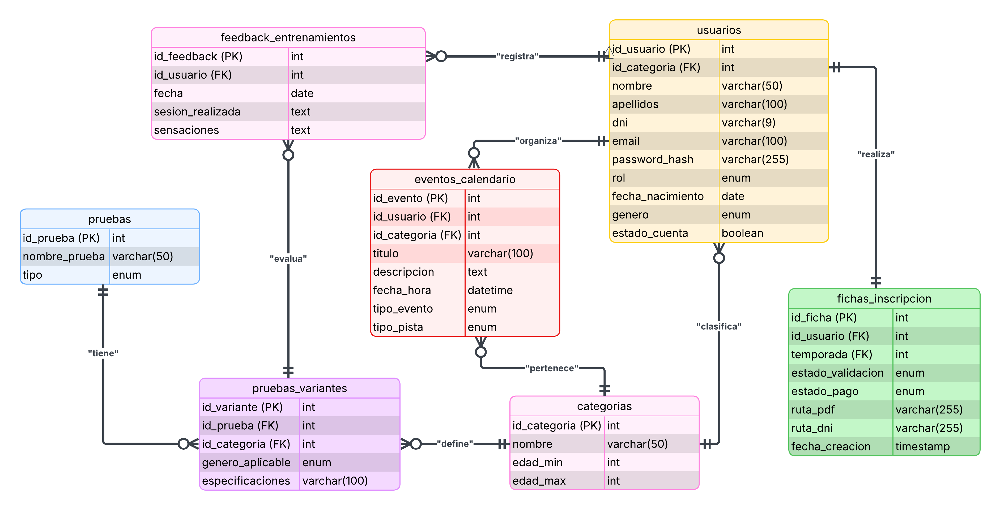
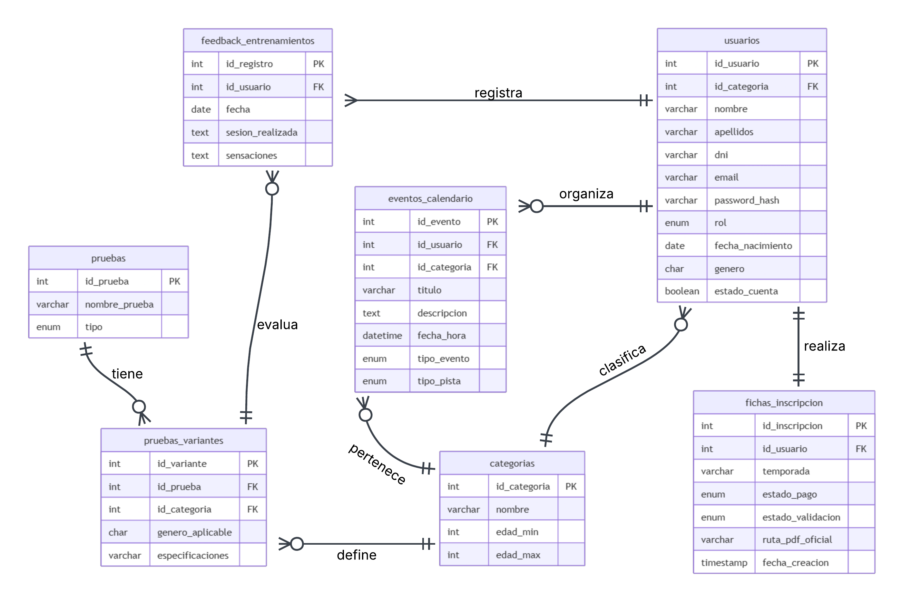
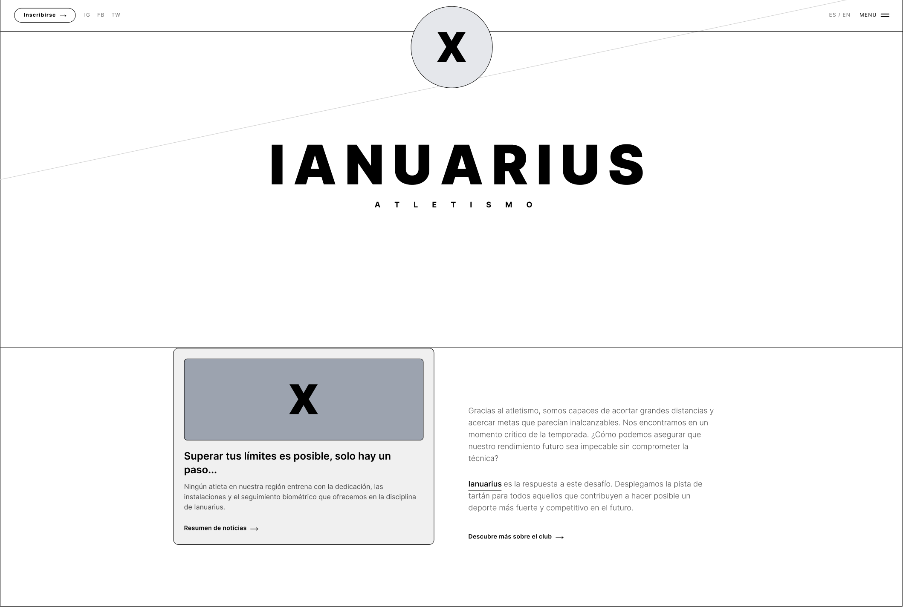
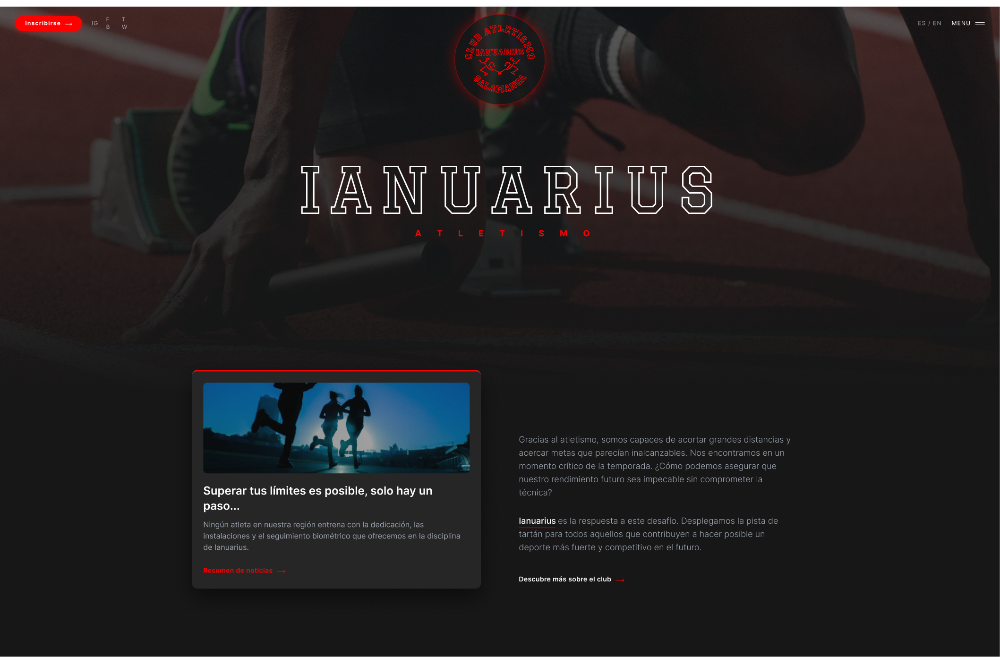
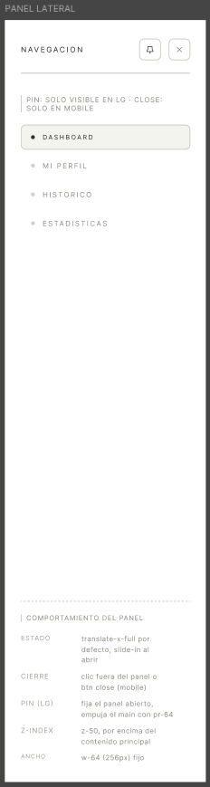
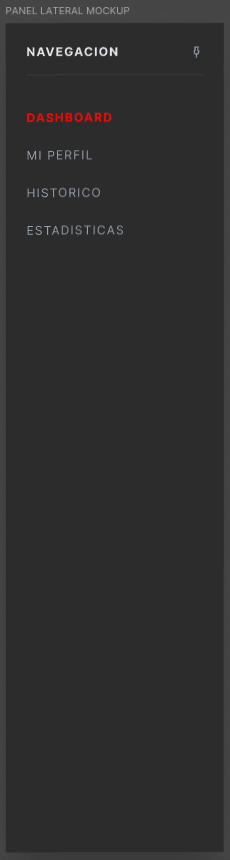
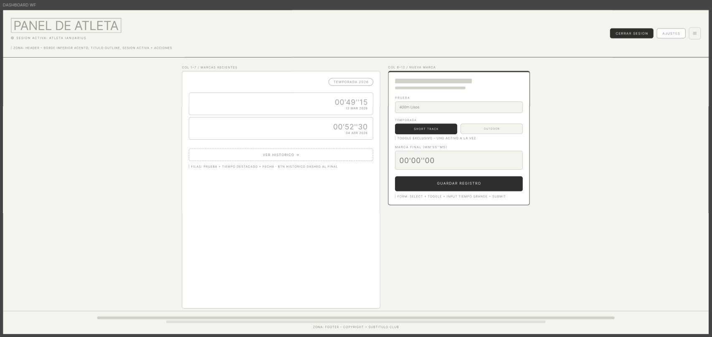
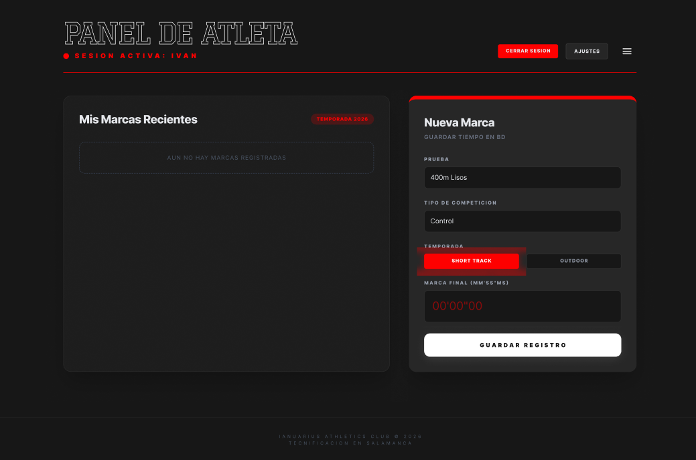
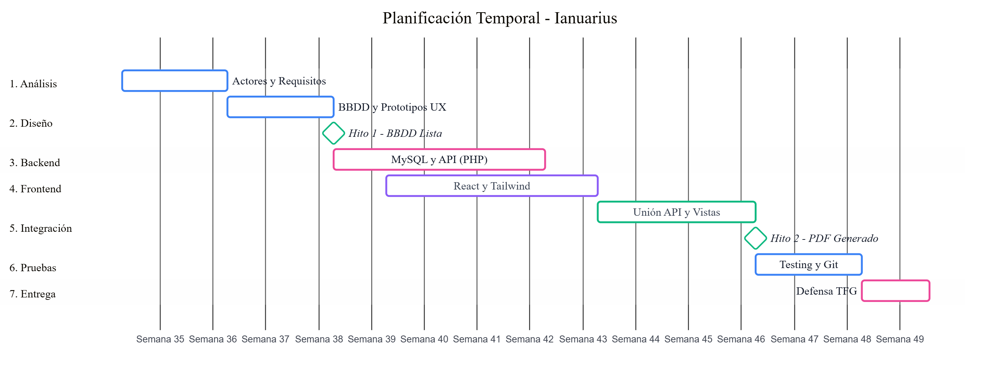

Ciclo Formativo de Grado Superior
Desarrollo de Aplicaciones Web
I.E.S. «Venancio Blanco» SALAMANCA

TUTOR
Serafina Martín Marcos
AUTOR
Iván Martín Nieto
Licencia
Esta obra está bajo una licencia Reconocimiento-Compartir bajo la misma licencia 3.0 España de Creative Commons. Para ver una copia de la licencia, visite http://creativecommons.org/licenses/by-sa/3.0/es/ o envíe una carta a Creative Commons, 171 Second Street, Suite 300, San Francisco, California 94105, USA.
Índice de Contenido
- Introducción y Justificación
- Definición del Sistema
- Diseño Tecnológico y Arquitectura
- Planificación y Metodología
- Desarrollo e Implementación
- Pruebas y Control de Calidad
- Conclusiones y Futuro
- Referencias y bibliografía
- Glosario de Términos y Acrónimos
- Anexos
Índice de Figuras
- Figura 1. Logo Ianuarius
- Figura 2. Logo Venancio Blanco
- Figura 3. Interfaz de competiciones de Clupik
- Figura 4. Interfaz de gestión de Playoff Informática
- Figura 5. Funcionalidades de Playoff Informática
- Figura 6. Diagrama de Casos de Uso del Sistema
- Figura 7. Diagrama UML
- Figura 8. Diagrama Entidad-Relación de la DB
- Figura 9. Modelo Relacional de la DB
- Figura 10. Wireframe estructural de la página "Home"
- Figura 11. Mockup final de la página "Home"
- Figura 12. Wireframe estructural del Panel Lateral
- Figura 13. Mockup final del Panel Lateral
- Figura 14. Wireframe estructural del Dashboard de Atleta
- Figura 15. Mockup final del Dashboard de Atleta
- Figura 16. Diagrama de Gantt con la previsión del proyecto
Índice de Tablas
- Tabla 1. Costes de Hardware y Software
- Tabla 2. Costes de Personal (Desarrollo)
- Tabla 3. Costes de Mantenimiento Anual
- Tabla 4. Análisis SMART: Objetivo General
- Tabla 5. Análisis SMART: Objetivos Funcionales
- Tabla 6. Definición de Actores
- Tabla 7. Especificación de Casos de Uso
- Tabla 8. Requisitos Funcionales y No Funcionales
- Tabla 9. Requisitos de Información (IRQ)
- Tabla 10. Stack Tecnológico
- Tabla 11. Diccionario de datos: categorias
- Tabla 12. Diccionario de datos: pruebas
- Tabla 13. Diccionario de datos: pruebas_variantes
- Tabla 14. Diccionario de datos: usuarios
- Tabla 15. Diccionario de datos: fichas_inscripcion
- Tabla 16. Diccionario de datos: feedback_entrenamientos
- Tabla 17. Diccionario de datos: eventos_calendario
- Tabla 18. Fases de Planificación (Gantt)
- Tabla 19. Glosario de Términos
1. Introducción y Justificación
1.1. Memoria Inicial
Aplicación web centrada en la gestión del club de atletismo Ianuarius, de forma que se digitalice su gestión.
En cualquiera de los casos, cabe destacar que el proyecto ha sido ampliamente pensado para el club homónimo al título de este, por lo que, para otros clubes, cabría la posibilidad de que haya funciones insuficientes o que, por el contrario, haya un exceso de estas.
1.2. Justificación
Por otra parte, gracias a esta transición al mundo digital, permitirá añadir funcionalidades que, en un entorno físico, sin esta aplicación, serían muy costosos, complicados o incluso imposibles de llevar a cabo, sobre todo teniendo en cuenta el gran número de atletas pertenecientes al club, de los cuales, su gran mayoría son menores, o lo suficientemente pequeños como para no estar capacitados para manejarse por sí mismos.
1.3. Oportunidad de Negocio
En cuanto a la oportunidad de negocio, este proyecto nace de la observación directa de una carencia tecnológica en el ámbito deportivo local. Los clubes de atletismo modestos no disponen de presupuestos holgados para contratar plataformas de gestión genéricas de alto coste. Además, la gran mayoría de estas plataformas están orientadas a deportes de equipo (como el fútbol o el baloncesto), obviando las necesidades específicas del atletismo: gestión de grandes volúmenes de inscripciones individuales, control de marcas personales, categorías por edades muy acotadas y la burocracia específica de las federaciones (seguros médicos e impresos oficiales).
Ianuarius se presenta como una oportunidad de negocio orientada a cubrir este nicho: un software vertical, específico para atletismo, de bajo coste, evitando sistemas de suscripción y centrado en resolver el "cuello de botella" burocrático de las inscripciones de menores de edad.
1.4. Estudio del Sector
Para evaluar la viabilidad y necesidad del proyecto, se ha realizado un análisis de las principales soluciones de software de gestión deportiva existentes en el mercado actual:
1.4.1. Clupik
Es una plataforma centrada fundamentalmente en la gestión de competiciones. Permite a los usuarios inscribirse en eventos deportivos, hacer un seguimiento de los mismos y, a nivel de administración, crear y organizar dichos torneos. Sin embargo, no está diseñada para cubrir la gestión burocrática interna del día a día de un club modesto. Carece de herramientas para la gestión de un club de atletismo (independientemente de sus dimensiones)

1.4.2. Playoff Informática
Es uno de los sistemas más potentes y consolidados. Permite la gestión de recibos y remesas bancarias con gran eficacia. El problema radica en que es una herramienta sobredimensionada ("overkill"); ofrece cientos de funcionalidades que un club modesto jamás usará, generando una curva de aprendizaje muy pronunciada para los entrenadores y padres y aumentando innecesariamente el precio del servicio al estar pagando funciones no útiles para el caso de un club pequeño de atletismo.


1.4.3. Necesidades reales no cubiertas (El hueco de Ianuarius)
Tras este análisis, se concluye que el sector adolece de una herramienta que satisfaga las siguientes demandas clave del Club Ianuarius:
Generación automatizada de burocracia: Ninguna de las alternativas genera de forma automática el PDF oficial de inscripción requerido por la Federación combinando los datos del usuario.
Seguimiento de sensaciones: Falta de un módulo sencillo donde el atleta pueda registrar su "feedback" post-entrenamiento en la pista.
Accesibilidad económica: Inexistencia de un sistema de bajo mantenimiento adaptado a la realidad financiera de los clubes pequeños.
1.5. Análisis de Viabilidad
1.5.1. Viabilidad Técnica
El proyecto es viable técnicamente dado que se desarrollará utilizando tecnologías sólidas y ampliamente documentadas (React, PHP 8.2 y MySQL 8.0). Sin embargo, al tratarse de un sistema que gestionará datos personales y fichas médicas de atletas (en su gran mayoría menores de edad), la viabilidad no solo reside en la capacidad de programación, sino en garantizar el estricto cumplimiento del RGPD y la LOPDGDD.
Para garantizar esta seguridad técnica, la aplicación se alojará en servidores ubicados dentro del Espacio Económico Europeo (EEE). Las contraseñas de los usuarios se almacenarán cifradas mediante funciones de hash. Respecto a los documentos altamente sensibles (como los PDF de las inscripciones generados y los escaneos de los DNI), se implementará un sistema de control de acceso en el backend (PHP). Los archivos se guardarán en directorios privados del servidor sin acceso público directo por URL, de forma que el sistema verificará primero el rol y la sesión del usuario antes de servir la descarga del documento.
1.5.2. Viabilidad Económica (Estimación de Costes)
Aunque el proyecto se desarrolla en un ámbito académico, a continuación se presenta una estimación del presupuesto como si se tratase de un encargo profesional para el Club Atletismo Ianuarius. Adicionalmente, se han calculado los costes periódicos necesarios para mantener el sistema en producción una vez finalizado el proyecto.
1.5.2.1. Costes de Hardware y Software
| Concepto | Descripción | Coste Estimado |
|---|---|---|
| Hardware | Amortización de equipo informático. | 250,00 € |
| Software IDE | Visual Studio Code, Obsidian. | 0,00 € (Free) |
| Entorno Servidor | XAMPP (Apache, MySQL, PHP). | 0,00 € (Free) |
| Diseño / UI | Figma (Plan gratuito), Tailwind CSS. | 0,00 € (Free) |
| Total Recursos | 250,00 € | |
1.5.2.2. Costes de Personal (Desarrollo)
| Fase | Horas Estimadas | Coste (18 € / h) |
|---|---|---|
| Análisis y Diseño | 40 h | 720,00 € |
| Desarrollo Backend y BBDD | 50 h | 900,00 € |
| Desarrollo Frontend y Vistas | 40 h | 720,00 € |
| Pruebas y Documentación | 20 h | 360,00 € |
| Total Desarrollo | 150 h | 2.700,00 € |
1.5.2.3. Costes de Mantenimiento Anual (Post-Desarrollo)
| Concepto | Descripción | Coste Anual |
|---|---|---|
| Dominio | Registro y renovación del dominio (ej. ianuarius.es). | 12,00 € / año |
| Hosting EEE | Servidor compartido avanzado o VPS básico en Europa. | 75,00 € / año |
| Certificado SSL | Let's Encrypt para cifrado de datos (HTTPS). | 0,00 € (Free) |
| Total Mantenimiento Anual | 87,00 € / año | |
Presupuesto Inicial Total (Desarrollo + Recursos): 2.950,00 € (Impuestos no incluidos).
2. Definición del Sistema
2.1. Objetivos del Proyecto
Siguiendo los criterios SMART (Específico, Medible, Alcanzable, Relevante y Temporal), se definen a continuación los objetivos del proyecto.
2.1.1. Objetivo General
| Concepto | Descripción | Análisis SMART |
|---|---|---|
| Propósito Principal | Desarrollar una plataforma web integral para la digitalización de la gestión del Club Atletismo Ianuarius (inscripciones, fichas y seguimiento). |
S: Digitalizar integralmente el proceso de inscripción y creación de fichas para el 100% de los atletas o sus tutores legales. M: Reducir el tiempo de gestión de las inscripciones manuales a menos de 3 minutos gracias a la vía digital. A: Desarrollable e implementable mediante la conexión de un formulario dinámico en React con un generador de PDF en el backend (PHP). R: Elimina por completo el uso de papel físico. Además, contempla y soluciona fricciones derivadas del factor humano y logístico: elimina la pereza o falta de tiempo para imprimir, esquiva las averías en impresoras domésticas, evita desplazamientos a copisterías y suprime los olvidos frecuentes de la inscripción física en casa o de las copias impresas del DNI. T: Totalmente funcional y desplegado para el inicio de la temporada 2026-2027 (y utilizable de ahí en adelante). |
2.1.2. Objetivos Funcionales
| ID | Módulo | Descripción | Justificación SMART | Prio. |
|---|---|---|---|---|
| OBJ-01 | Usuarios | Registro, Login y distinción de roles (Admin, Entrenador, Atleta). | S: Acceso seguro por credenciales. M: 3 roles diferenciados. T: Desarrollado entre la Semana 6 (Backend) y Semana 10 (Frontend). | Alta |
| OBJ-02 | Fichas | Subida de archivos escaneados para inscripciones físicas (legacy). | S: Upload de PDF/JPG. R: Soporte a inscripciones manuales. T: Operativo en la Semana 8 (Módulo de protección de archivos). | Alta |
| OBJ-03 | Fichas | Inscripción online con generación automática de PDF y envío por email. | S: Formulario a PDF automático. M: 0 errores de transcripción. T: Completado en la Semana 12 (Integración). | Media |
| OBJ-04 | Gestión | Filtros de búsqueda avanzada (Categoría, edad, prueba, marcas). | S: Filtrado SQL dinámico. T: Implementado entre la Semana 7 (Lógica servidor) y Semana 11 (Vistas). | Media |
| OBJ-05 | Atletas | Calendario de eventos y feedback de entrenamientos (sensaciones). | S: Calendario visual interactivo. R: Seguimiento deportivo. T: Integrado en la Semana 13 (Fase de validación). | Baja |
2.2. Definición de Actores
| ID: ACT-01 | Visitante |
|---|---|
| Descripción | Usuario no registrado que accede a la parte pública (portfolio informativo). |
| Permisos | Visualizar información básica del club. Ejecutar el registro y la recuperación de credenciales. |
| ID: ACT-02 | Atleta |
|---|---|
| Descripción | Integrante del club registrado de forma oficial. |
| Permisos | Iniciar sesión, realizar inscripciones, acceder a su historial, cerrar sesión y registrar feedback de entrenamientos. Edición de datos limitada a validación administrativa. |
| ID: ACT-03 | Entrenador (Administrador) |
|---|---|
| Descripción | Miembro del cuerpo técnico encargado de la gestión del club. Hereda los permisos del Atleta. |
| Permisos | Visualizar todas las fichas, aplicar filtros avanzados (edad, marca, prueba) y consultar el calendario global. |
| ID: ACT-04 | Sistema (PDF / Correo) |
|---|---|
| Descripción | Actor de sistema (automático) que interactúa con la aplicación. |
| Permisos | Compilación de documentos oficiales PDF y envío automatizado de notificaciones por email. |
2.3. Especificación Funcional
2.3.1. Diagrama de Casos de Uso

2.3.2. Especificación de Casos de Uso
| UC-01 | Registro y Autenticación (Login/Logout) |
|---|---|
| Actor | Visitante / Atleta / Entrenador |
| Flujo Principal | 1. El usuario introduce credenciales. 2. El sistema valida contra la BBDD. 3. El sistema inicia sesión y redirige al panel. 4. El usuario puede finalizar la sesión (Logout) destruyendo el token. |
| Excepciones | Datos incorrectos: El sistema deniega el acceso y bloquea tras 5 intentos fallidos. |
| UC-02 | Recuperar Contraseña |
|---|---|
| Actor | Visitante |
| Flujo Principal | 1. El usuario solicita reset por email. 2. El sistema genera un link temporal único. 3. El usuario cambia la clave y el sistema actualiza el hash Bcrypt en la BBDD. |
| Excepciones | Email no registrado: El sistema informa que se ha enviado el proceso (sin confirmar existencia del correo). |
| UC-03 | Realizar Inscripción Online |
|---|---|
| Actor | Atleta / Sistema |
| Flujo Principal | 1. El usuario completa el formulario médico. 2. El Generador PDF crea el documento oficial. 3. El Sistema de Correo envía la copia al usuario. |
| Excepciones | Falta de documentos anexos (DNI): La inscripción queda en estado "Pendiente de validación". |
| UC-04 | Subir Archivo Físico / DNI |
|---|---|
| Actor | Atleta |
| Flujo Principal | 1. El usuario selecciona archivo (JPG/PDF). 2. El sistema verifica peso (< 2MB). 3. El archivo se almacena en directorio protegido vinculado al ID de usuario. |
| Excepciones | Formato no válido: El sistema rechaza la subida. |
| UC-05 | Registrar Feedback de Entrenamientos |
|---|---|
| Actor | Atleta |
| Flujo Principal | 1. El atleta accede a su sesión deportiva. 2. Anota marcas y sensaciones post-entreno. 3. El sistema actualiza el historial de rendimiento deportivo. |
| Excepciones | Formulario incompleto: El sistema impide el guardado de la sesión. |
| UC-06 | Filtrar Fichas y Consultar Calendario |
|---|---|
| Actor | Entrenador |
| Flujo Principal | 1. El entrenador aplica filtros (edad, marca, categoría). 2. El sistema realiza consulta SQL dinámica. 3. Se muestra el listado y la planificación grupal. |
| Excepciones | Sin resultados: El sistema muestra aviso de "No hay atletas para ese criterio". |
2.4. Requisitos del Sistema (SRS)
2.4.1. Requisitos Funcionales (RF)
| ID | Función | Actor | Prio. |
|---|---|---|---|
| RF-01 | Registro de nuevos usuarios. | Visitante | Alta |
| RF-02 | Autenticación y Control de Acceso (Login). | Todos | Alta |
| RF-03 | Recuperación de credenciales (Password Reset). | Visitante | Alta |
| RF-04 | Cierre de sesión seguro (Logout). | Atleta/Entren. | Alta |
| RF-05 | Gestión de Inscripciones Online. | Atleta | Alta |
| RF-06 | Edición de datos (restringida a plazos legales). | Atleta | Media |
| RF-07 | Carga de documentación digital (DNI, seguros). | Atleta | Alta |
| RF-08 | Registrar Feedback de entrenamientos. | Atleta | Media |
| RF-09 | Generación automatizada de PDF de inscripción. | Sistema | Alta |
| RF-10 | Envío automatizado de notificaciones por Email. | Sistema | Media |
| RF-11 | Consulta de historial de marcas personales. | Atleta | Baja |
| RF-12 | Filtrado global de fichas por edad o categoría. | Entrenador | Media |
| RF-13 | Visualización de calendario y planificación grupal. | Entrenador | Baja |
2.4.2. Requisitos No Funcionales (RNF)
| ID | Categoría | Métrica Verificable |
|---|---|---|
| RNF-01 | Seguridad | Cifrado de contraseñas mediante algoritmo Bcrypt. |
| RNF-02 | Seguridad | Invalidación de sesión tras 30 minutos de inactividad. |
| RNF-03 | Rendimiento | Generación y envío del PDF en menos de 5 segundos. |
| RNF-04 | Rendimiento | Consultas de filtrado global en menos de 2 segundos. |
| RNF-05 | Usabilidad | Diseño bajo estándar Mobile First para uso en pista. |
| RNF-06 | Usabilidad | Cumplimiento de accesibilidad WCAG 2.1 (Nivel AA). |
| RNF-07 | Disponibilidad | Uptime (tiempo en línea) garantizado del 99.9% anual. |
2.4.3. Requisitos de Información (IRQ)
| ID: IRQ-01 | Información Persistente (MySQL) |
|---|---|
| Obligatoriedad | Campos NOT NULL estrictos para mantener integridad referencial. |
| Datos | • Credenciales: Email (Unique), Password (Hash). • Perfil: DNI (Unique), Fecha Nacimiento. • Fichas: Rutas absolutas a archivos físicos. |
2.5. Normativa y Legislación
2.5.1. Protección de Datos (RGPD)
- Datos: Tratamiento de nombre, DNI, datos médicos básicos y del tutor legal para menores de 14 años.
- Alojamiento: Servidores de Hostinger ubicados en el Espacio Económico Europeo (UE).
- Olvido: Botón directo de "Eliminar cuenta y datos" en el perfil de usuario.
2.5.2. LSSI-CE y Cookies
- Cookies: Uso exclusivo de cookies técnicas de sesión y localStorage para autenticación.
- Aviso Legal: Contendrá NIF, domicilio social y datos de registro deportivo del C.D. Salamanca Ianuarius.
2.5.3. Accesibilidad y Licencias
- WCAG 2.1: Contraste 4.5:1 garantizado (Rojo Ianuarius #E63946) y navegación semántica ARIA.
- Licencias: Uso de React y Tailwind (MIT), PHP/MySQL (GPL) y FPDF (Licencia permisiva).
3. Diseño Tecnológico y Arquitectura
3.1. Stack Tecnológico
Para el desarrollo de Ianuarius se ha seleccionado una arquitectura moderna separando el cliente del servidor, garantizando así una experiencia de usuario fluida y un mantenimiento seguro. Las tecnologías elegidas son las siguientes:

Frontend (Interfaz de usuario): React 18 y Tailwind CSS
Se empleará React (versión 18) junto con el framework de estilos Tailwind CSS. Se elige esta librería frente a un enfoque tradicional con PHP nativo para evitar interfaces estáticas. React permite desarrollar una aplicación web dinámica, fluida y con una experiencia de usuario superior, comportándose como una "Single Page Application" (SPA).

Backend (Lógica y Servidor): PHP 8.2
Se utilizará PHP en su versión 8.2. Se encargará de gestionar la lógica de negocio, la seguridad (protección de directorios), la autenticación y la creación de una API REST que se comunicará de forma asíncrona con el Frontend mediante formato JSON.

Base de Datos: MySQL 8.0
Se implementará MySQL (versión 8.0) para garantizar la persistencia de los datos estructurados y mantener la integridad relacional estricta entre los usuarios (atletas/entrenadores) y sus fichas médicas e inscripciones.
3.2. Arquitectura del Software
El sistema Ianuarius se ha diseñado bajo un modelo de arquitectura Cliente-Servidor estructurado en dos capas totalmente desacopladas. Esta separación de responsabilidades permite un mantenimiento más ágil, una mayor seguridad y una mejor escalabilidad del proyecto a futuro.
Modelo de Comunicación y API REST
La interacción entre la interfaz de usuario y el servidor se realiza mediante una API REST (Application Programming Interface), desarrollada íntegramente en PHP. El ciclo de vida de una petición típica en la aplicación sigue estos cuatro pasos fundamentales:
1º. Interacción (Frontend): La aplicación interactiva construida en React captura las acciones del usuario (por ejemplo, enviar el formulario de una nueva inscripción o solicitar el listado de atletas).
2º. Petición Asíncrona: React utiliza la API nativa "fetch" (o la librería Axios) para enviar una petición HTTP (GET, POST, PUT o DELETE) al servidor. Al ser una SPA (Single Page Application), esto ocurre en segundo plano sin necesidad de recargar la página del navegador.
3º. Procesamiento (Backend): El servidor PHP recibe la petición HTTP, valida los permisos de seguridad y el rol del usuario, ejecuta la lógica de negocio correspondiente y realiza las consultas necesarias a la base de datos MySQL.
4º. Respuesta (JSON): PHP devuelve al cliente la información solicitada empaquetada en un objeto de formato JSON. React intercepta esta respuesta y actualiza el DOM (la pantalla) de forma reactiva para mostrar los resultados al usuario.
Seguridad en la Arquitectura
Para garantizar el cumplimiento de la normativa de protección de datos (RGPD), la arquitectura se blinda en el lado del servidor. Las rutas de la API en PHP comprueban activamente las credenciales mediante el uso de sesiones o tokens de autenticación antes de servir cualquier archivo o dato sensible (como los PDF oficiales generados o las marcas deportivas), impidiendo el acceso no autorizado mediante la manipulación de las URL en el Frontend.
3.4. Diseño de Datos
Para estructurar la persistencia de la información en la base de datos MySQL, se ha diseñado un Modelo Entidad-Relación altamente normalizado. Para gestionar la complejidad de las especialidades del atletismo (donde las alturas o pesos varían según la edad y el género), se ha implementado una tabla intermedia de detalle. El sistema se compone de siete tablas principales:
3.4.1. Entidad Relación

3.4.2. Modelo Relacional
Para garantizar la integridad y escalabilidad de los datos de Ianuarius, se ha optado por un Modelo Relacional implementado en MySQL. Este modelo responde a la necesidad de mantener relaciones estrictas entre los usuarios (atletas) y sus registros deportivos (fichas, tiempos, categorías).

3.4.3. Tabla: categorias
Catálogo maestro que define los rangos de edad (ej. Sub-16, Sub-18).
| Campo | Tipo | Restricciones | Descripción |
|---|---|---|---|
| id_categoria | INT | PK, AUTO_INCREMENT | Identificador único. |
| nombre | VARCHAR(50) | NOT NULL | Nombre (ej. 'Sub-16'). |
| edad_min | INT | NOT NULL | Edad mínima para pertenecer. |
| edad_max | INT | NOT NULL | Edad máxima para pertenecer. |
3.4.4. Tabla: pruebas
Catálogo maestro de las disciplinas generales de atletismo.
| Campo | Tipo | Restricciones | Descripción |
|---|---|---|---|
| id_prueba | INT | PK, AUTO_INCREMENT | Identificador único. |
| nombre_prueba | VARCHAR(50) | NOT NULL | Ej: '100m', 'Lanzamiento Peso'. |
| tipo | ENUM | NOT NULL | 'Carrera', 'Salto' o 'Lanzamiento'. |
3.4.5. Tabla: pruebas_variantes
Tabla de detalle que resuelve la relación N:M entre Pruebas y Categorías, añadiendo especificaciones técnicas.
| Campo | Tipo | Restricciones | Descripción |
|---|---|---|---|
| id_variante | INT | PK, AUTO_INCREMENT | Identificador único. |
| id_prueba | INT | FK | Prueba base asociada. |
| id_categoria | INT | FK | Categoría a la que aplica. |
| genero_aplicable | ENUM | NOT NULL | 'M', 'F' o 'Ambos'. |
| especificaciones | VARCHAR(100) | NULL | Ej: '0.84m', '4kg', etc. |
3.4.6. Tabla: usuarios
Almacena las credenciales de acceso y datos personales, perfilando al atleta.
| Campo | Tipo | Restricciones | Descripción |
|---|---|---|---|
| id_usuario | INT | PK, AUTO_INCREMENT | Identificador único. |
| id_categoria | INT | FK | Categoría actual del atleta. |
| nombre | VARCHAR(50) | NOT NULL | Nombre de pila. |
| apellidos | VARCHAR(100) | NOT NULL | Apellidos del usuario. |
| dni | VARCHAR(9) | UNIQUE | Documento de identidad. |
| VARCHAR(100) | UNIQUE, NOT NULL | Correo electrónico. | |
| password_hash | VARCHAR(255) | NOT NULL | Contraseña cifrada con Bcrypt. |
| rol | ENUM | DEFAULT 'Atleta' | 'Admin', 'Entrenador' o 'Atleta'. |
| fecha_nacimiento | DATE | NOT NULL | Para cálculo de categoría. |
| genero | ENUM | NOT NULL | 'M' o 'F'. |
| estado_cuenta | BOOLEAN | DEFAULT TRUE | Para bloquear acceso si es necesario. |
3.4.7. Tabla: fichas_inscripcion
Almacena los documentos. Relación 1:1 con la tabla usuarios.
| Campo | Tipo | Restricciones | Descripción |
|---|---|---|---|
| id_ficha | INT | PK, AUTO_INCREMENT | Identificador de la ficha. |
| id_usuario | INT | FK, UNIQUE | Enlace al usuario propietario. |
| temporada | VARCHAR(20) | NOT NULL | Ej. '2026-2027'. |
| estado_validacion | ENUM | DEFAULT 'pendiente' | 'pendiente', 'validado' o 'error_dni'. |
| estado_pago | ENUM | DEFAULT 'pendiente' | 'pendiente', 'pagado'. |
| ruta_pdf | VARCHAR(255) | NULL | Ruta del PDF generado. |
| ruta_dni | VARCHAR(255) | NULL | Ruta del DNI escaneado. |
| fecha_creacion | TIMESTAMP | DEFAULT CURRENT_TIMESTAMP | Fecha de generación. |
3.4.8. Tabla: feedback_entrenamientos
Registra las sensaciones diarias. Relación 1:N con la tabla usuarios.
| Campo | Tipo | Restricciones | Descripción |
|---|---|---|---|
| id_registro | INT | PK, AUTO_INCREMENT | Identificador del registro. |
| id_usuario | INT | FK | Atleta que entrena. |
| fecha | DATE | NOT NULL | Día de la sesión. |
| sesion_realizada | TEXT | NOT NULL | Desglose libre de series, repeticiones, tiempos y recuperaciones. |
| sensaciones | TEXT | NULL | Comentarios del rendimiento. |
3.4.9. Tabla: eventos_calendario
Da soporte al calendario de pista (RF-13).
| Campo | Tipo | Restricciones | Descripción |
|---|---|---|---|
| id_evento | INT | PK, AUTO_INCREMENT | Identificador único. |
| id_usuario | INT | FK | Identificador del usuario participante. |
| id_categoria | INT | FK | Prueba que el atleta realizará en el evento. |
| titulo | VARCHAR(100) | NOT NULL | Nombre del evento. |
| descripcion | TEXT | NULL | Detalles adicionales. |
| fecha_hora | DATETIME | NOT NULL | Fecha y hora del evento. |
| tipo_evento | ENUM | NOT NULL | 'nacional', 'autonomico', 'provincial', 'control', 'escolares'. |
| tipo_pista | ENUM | NOT NULL | 'aire libre', 'pista cubierta', 'cross'. |
3.5. Diseño de Interfaz (UI/UX)
En esta fase se define la experiencia de usuario centrada exclusivamente en la Página Principal (Landing/Home), siguiendo un proceso de diseño iterativo que evoluciona desde la estructura básica hasta el aspecto visual corporativo final.
3.5.1. Paleta de Colores
Se definirá una paleta cromática basada en la identidad corporativa del Club de Atletismo Ianuarius, priorizando el contraste y la legibilidad para entornos con mucha luz (exteriores):
- Color Principal (Identidad Club): Rojo Ianuarius (#FE0000) - Se reserva para los botones de acción principal (CTA), enlaces destacados y elementos de marca. Transmite la energía y velocidad del atletismo.
- Fondo Principal: #171717 (Oscuro) - Proporciona una estética moderna e inmersiva, haciendo que el rojo resalte de forma brutal.
- Fondo Secundario: #262626 (Gris) - Para tarjetas de contenido y menús superpuestos. Crea profundidad y jerarquía visual.
- Texto Principal: #FFFFFF (Blanco) - Máximo contraste contra los fondos oscuros, garantizando la legibilidad y el cumplimiento de accesibilidad.
- Texto Secundario: #9CA3AF (Gris Claro) - Para párrafos descriptivos y textos largos, suavizando la lectura sin fatigar la vista.
3.5.2. Tipografía
Se emplea una combinación de dos familias tipográficas con roles diferenciados:
Graduate (Serif Collegiate): Para los títulos principales de marca y logotipos. Evoca la estética de los clubes deportivos tradicionales, transmitiendo espíritu de equipo.
Inter (Sans-serif Variable): Para textos de cuerpo, botones, menús y formularios. Diseñada específicamente para pantallas, garantiza alta legibilidad en tamaños pequeños, fundamental para la lectura de sesiones de entrenamiento en dispositivos móviles a pie de pista.
3.5.3. Prototipado y Experiencia de Usuario (UX)
El diseño se ha planteado utilizando la herramienta Figma, partiendo de un esquema estructural (Wireframe) hasta alcanzar el diseño final de alta fidelidad (Mockup):






3.5.4. Justificación de decisiones de diseño (UX)
Las decisiones aplicadas a la página principal buscan reducir la fricción cognitiva y asegurar que la plataforma resulte intuitiva:
- Jerarquía Visual: El diseño emplea el "Rojo Ianuarius" estratégicamente en el botón principal (CTA) del área Hero para guiar inmediatamente al usuario hacia la acción principal (inscripción/acceso).
- Flujo de Lectura: La estructura respeta el patrón "Z", facilitando la localización rápida del logo, la navegación y el contenido clave.
- Accesibilidad: Los fondos neutros (#F8F9FA) aseguran que el texto oscuro (#212529) cumpla con los estándares de contraste, mientras que el espaciado generoso ayuda a estructurar visualmente la interfaz de cara a su codificación final en componentes.
4. Planificación y Metodología
4.1. Metodología de Trabajo
Para la ejecución de la plataforma Ianuarius, se ha optado por una Metodología Ágil basada en un modelo Scrum adaptado a un único desarrollador.
4.1.1. Desarrollo iterativo e incremental:
Permite tener versiones funcionales desde las primeras semanas, añadiendo módulos de forma progresiva.
4.1.2. Herramientas de gestión y Control de Versiones:
Se utilizará un tablero tipo Kanban (GitHub Projects) dividido en las columnas básicas: Backlog, In Progress, Testing y Done. Además, para garantizar la calidad del código, se implementará un flujo de trabajo basado en Feature Branches (Ramas por funcionalidad) en Git, realizando Pull Requests y auto-revisiones de código antes de integrar cualquier cambio a la rama principal (main).
4.2. Planificación Temporal (Gantt)
El desarrollo se ha planificado en un bloque temporal de 15 semanas. Se ha optado por solapar parcialmente las fases de Backend y Frontend para optimizar el tiempo de integración, marcando hitos críticos como la finalización de la BBDD y la generación del primer PDF oficial.

| Fase | Tarea Principal | Duración | Semanas |
|---|---|---|---|
| 1. Análisis | Definición de actores, Casos de Uso y Requisitos. | 2 semanas | 1 – 2 |
| 2. Diseño | Diseño de BBDD, arquitectura y prototipos visuales. (Hito: BBDD Diseñada) | 2 semanas | 3 – 4 |
| 3. Backend | Desarrollo MySQL, PHP 8.2, API REST. | 4 semanas | 5 – 8 |
| 4. Frontend | Maquetación responsiva con React y Tailwind. | 4 semanas | 6 – 9 |
| 5. Integración | Unificación API y Vistas. (Hito: 1º PDF Generado) | 3 semanas | 10 – 12 |
| 6. Pruebas | Tests de validación, resolución de bugs y revisión Git. | 2 semanas | 13 – 14 |
| 7. Entrega | Redacción de memoria final y defensa. | 1 semana | 15 |
4.3. Guion de Trabajo
A continuación se detalla el "Roadmap" del proyecto, desglosando las fases de la planificación temporal en tareas técnicas específicas y asignadas por semanas, para garantizar un seguimiento exhaustivo del desarrollo:
Fase 1: Análisis y Diseño (Semanas 1 - 4)
Semana 1-2: Toma de requisitos, análisis de competencia y elaboración de diagramas de Casos de Uso.
Semana 3: Diseño del modelo Entidad-Relación y creación de los esquemas relacionales (MySQL). (Hito 1: Estructura de BBDD finalizada).
Semana 4: Elaboración de wireframes y maquetado visual de la interfaz de usuario en Figma.
Fase 2: Backend y Base de Datos (Semanas 5 - 8)
Semana 5: Configuración del entorno (XAMPP), despliegue de la BBDD e implementación de la librería FPDF/TCPDF.
Semana 6: Desarrollo de la API REST (PHP 8.2) y creación de los endpoints básicos (Registro, Login) con cifrado de contraseñas.
Semana 7: Programación de la lógica de filtros de marcas deportivas y categorías por edades en el servidor.
Semana 8: Desarrollo del módulo de control de acceso y protección de directorios para los archivos PDF de los atletas.
Fase 3: Frontend e Integración (Semanas 9 - 12)
Semana 9: Inicialización del proyecto en React 18, configuración del enrutamiento y aplicación de Tailwind CSS.
Semana 10: Maquetación de los paneles de control y dashboard del Entrenador.
Semana 11: Conexión asíncrona (Fetch/Axios) entre el Frontend y la API REST para el intercambio de datos JSON.
Semana 12: Integración compleja del formulario de inscripciones con el generador de PDF del backend. (Hito 2: Primer PDF Oficial Generado con éxito).
Fase 4: Pruebas y Despliegue (Semanas 13 - 15)
Semana 13: Ejecución de pruebas unitarias en formularios y revisión de ramas (Pull Requests) de Git.
Semana 14: Resolución de errores (testing continuo).
Semana 15: Despliegue en el servidor de producción (hosting), redacción final de los manuales y preparación de la defensa.
5. Desarrollo e Implementación
5.1. Organización real del trabajo
El desarrollo de Ianuarius siguió un enfoque iterativo e incremental, ajustando la metodología ágil propuesta a las condiciones reales de un proyecto individual. El trabajo se organizó en cuatro entregas formales.
El control de versiones se gestionó con Git a través del repositorio GitLab del centro, empleando ramas de funcionalidad integradas en la rama principal mediante Pull Requests.
Las principales desviaciones respecto a la planificación inicial fueron tres. La generación de documentos PDF con librería externa se sustituyó por un sistema de plantilla administrable, más sencillo y fácil de mantener a largo plazo (sobre todo por la no dependencia de un desarrollador). Los datos de feedback de entrenamientos, previstos inicialmente en una tabla independiente, se integraron directamente en la tabla de marcas, al resultar suficiente y más natural.
Por último, se añadió la autenticación con Google, funcionalidad no contemplada en la planificación original pero que mejoró notablemente la experiencia de acceso.
5.2. Estructura del Proyecto
El proyecto se organiza en tres capas bien diferenciadas dentro del directorio ianuarius-app.
El directorio backend contiene todo el código PHP que se ejecuta en el servidor: el enrutador central de la API, los ocho controladores de negocio (autenticación, usuarios, marcas, eventos, pruebas, categorías, administración y recuperación de contraseña), la clase de conexión a la base de datos y el fichero de configuración del entorno.
El directorio frontend agrupa el código React de la aplicación: el componente raíz que actúa como enrutador de vistas, los componentes específicos de cada sección (inicio, perfil, dashboard del atleta, panel del entrenador, panel de administración, calendario, inscripción y auxiliares), y los ficheros de configuración del compilador y de los estilos.
La carpeta database contiene el esquema completo de la base de datos en formato SQL: definición de tablas, restricciones de integridad y datos de catálogo (pruebas atléticas y categorías). En la raíz del proyecto se encuentran los ficheros de Docker, que permiten levantar el entorno de desarrollo local con un único comando.
5.3. Aspectos relevantes de la codificación
A continuación se describen los aspectos técnicos más relevantes del desarrollo, agrupados por módulo funcional.
5.3.1. Enrutamiento de la API REST
El sistema de enrutamiento se implementó sin frameworks externos. Todas las peticiones HTTP se resuelven en un fichero central que analiza la URL, identifica el recurso solicitado y delega en el controlador correspondiente. Este diseño minimalista facilita la comprensión y el mantenimiento del código, y garantiza que todas las respuestas sean en formato JSON.
5.3.2. Seguridad y acceso a datos
El acceso a la base de datos utiliza exclusivamente consultas preparadas para prevenir inyecciones SQL. Las contraseñas se almacenan cifradas mediante el algoritmo bcrypt y nunca en texto plano. La sesión del usuario se gestiona mediante una cookie con atributos de seguridad que impiden su acceso desde JavaScript y reducen el riesgo de ataques de falsificación de peticiones. Cada operación protegida verifica el rol del usuario antes de ejecutarse, rechazando las solicitudes no autorizadas. El proceso de registro incluye validaciones en el servidor para todos los campos obligatorios: formato del DNI, complejidad de la contraseña, y unicidad de email y DNI.
5.3.3. Autenticación con Google OAuth
Para el inicio de sesión con Google se implementó un flujo que verifica el token de acceso directamente con los servidores de Google antes de crear o recuperar ninguna cuenta. Si el usuario ya existe en el sistema, la sesión se inicia de inmediato. Si es un registro nuevo, la aplicación solicita los datos que Google no proporciona: DNI, fecha de nacimiento y género, necesarios para completar el perfil del atleta.
5.3.4. Navegación SPA sin React Router
La navegación entre las diferentes secciones de la aplicación se implementó sin añadir librerías adicionales, aprovechando directamente la API de historial del navegador. Esto permite cambiar de sección sin recargar la página y que el botón "atrás" del navegador funcione correctamente. La decisión de no incluir React Router mantuvo el tamaño del paquete final más reducido.
5.3.5. Vinculación de marcas a eventos del calendario
Cada marca registrada queda asociada obligatoriamente a un evento del calendario de competiciones. Esto permite que el sistema derive de forma automática el tipo de competición y la temporada a partir del evento elegido, sin que el atleta tenga que introducir esos datos manualmente. De esta forma se evitan errores de clasificación y se simplifica el proceso de registro.
5.3.6. Filtrado de atletas en los paneles de gestión
Los filtros de búsqueda disponibles en el panel del entrenador y del administrador (texto libre, género y categoría atlética) se aplican directamente en el navegador sobre los datos ya cargados, sin necesidad de nuevas consultas al servidor. Dado el volumen habitual de usuarios en un club de atletismo, este enfoque es suficiente y resulta más ágil. Las categorías disponibles se calculan dinámicamente a partir de los datos reales del club.
5.3.7. Módulo de inscripción PDF
El módulo de inscripción se basa en una plantilla PDF que sube el administrador del club. El atleta accede a ella desde la aplicación, la rellena directamente en el navegador y la guarda o imprime. Este sistema no requiere ninguna librería externa de generación de documentos y delega el mantenimiento del formulario en el propio responsable del club: si el documento oficial cambia, basta con actualizar la plantilla desde el panel de administración.
5.4. Despliegue
El despliegue de la aplicación contempló dos entornos diferenciados: un entorno de desarrollo local y un entorno de producción.
5.4.1. Entorno de desarrollo
El entorno local se levanta con Docker Compose, que coordina tres servicios: un servidor Apache con PHP 8.2, una base de datos MySQL 8.0 con almacenamiento persistente y una interfaz de administración de la base de datos. El frontend React se ejecuta por separado con el servidor de desarrollo de Vite, que incluye recarga automática en caliente y un proxy configurado para comunicarse con el backend sin conflictos de acceso entre dominios.
5.4.2. Entorno de producción
El despliegue en producción requirió varias iteraciones. En un primer momento se probó con el servicio de hosting gratuito InfinityFree, pero las restricciones de ese entorno —limitaciones de PHP y ausencia de soporte para determinadas cabeceras HTTP— hicieron inviable el despliegue completo. Finalmente, la aplicación se desplegó en un servidor Apache propio, con el código gestionado desde el repositorio GitLab del centro.
El backend se configuró con reglas de reescritura de URL y gestión de CORS diferenciada para los entornos de desarrollo y producción. El frontend se compila como archivos estáticos y se sube al servidor, con la ruta base ajustada al subdirectorio de producción.
6. Pruebas y Control de Calidad
6.1. Plan de Pruebas
Para verificar el correcto funcionamiento de la aplicación se diseñó un plan de pruebas manuales estructurado por módulos funcionales. Cada caso de prueba especifica la acción realizada, los datos de entrada utilizados, el resultado esperado y el resultado obtenido durante la ejecución. Todas las pruebas se realizaron sobre el entorno de producción desplegado, reproduciendo el comportamiento real de un usuario final.
Los módulos cubiertos fueron los siguientes:
Módulo 1 — Autenticación: Registro, login con credenciales correctas e incorrectas, bloqueo por intentos fallidos y cierre de sesión.
Módulo 2 — Google OAuth: Inicio de sesión con cuenta Google existente y registro de cuenta nueva con completado de perfil.
Módulo 3 — Recuperación de contraseña: Solicitud de reset, recepción del email, acceso al enlace temporal y cambio de contraseña.
Módulo 4 — Perfil de usuario: Edición de datos personales, subida de foto de perfil, escaneo de DNI y eliminación de cuenta (RGPD).
Módulo 5 — Calendario de eventos: Creación, visualización y eliminación de eventos por parte del administrador y visualización por atletas.
Módulo 6 — Registro y gestión de marcas: Alta de marcas vinculadas a evento, registro de sensaciones emoji, visualización en dashboard.
Módulo 7 — Inscripción PDF: Subida de plantilla por el admin, acceso del atleta, rellenado en iframe y guardado/impresión.
Módulo 8 — Panel del entrenador: Filtros por texto, género y categoría; visualización de perfil de atleta y sus marcas.
Módulo 9 — Panel de administrador: Gestión de atletas y entrenadores, acceso a fichas, cambio de roles.
Módulo 10 — Control de acceso por roles: Verificación de que rutas protegidas rechazan accesos no autorizados según rol.
6.2. Registro de Incidencias
A lo largo del desarrollo de Ianuarius se registraron diversas incidencias técnicas que requirieron análisis y corrección. La siguiente tabla recoge los problemas más relevantes identificados, su causa y la solución aplicada en cada caso.
La tabla completa de incidencias se encuentra disponible en el documento Word oficial de la memoria.
6.3. Validación de Requisitos
La siguiente tabla cruza cada requisito funcional y no funcional definido en el capítulo 2 con su estado de implementación al cierre del proyecto, indicando las observaciones pertinentes en los casos en que la solución final difiere de la especificación inicial.
Todos los requisitos funcionales (RF-01 a RF-13) y no funcionales (RNF-01 a RNF-07) definidos en el apartado 2.4 fueron validados satisfactoriamente. La única variación respecto a la especificación original fue la sustitución del generador de PDF por librería (FPDF/TCPDF) por un sistema de plantilla administrable, decisión que preserva el objetivo funcional (RF-05, RF-09) con mayor facilidad de mantenimiento.
7. Conclusiones y Futuro
7.1. Grado de cumplimiento de objetivos
(Pendiente)
7.2. Dificultades y aprendizaje personal
(Pendiente)
7.3. Posibles mejoras y líneas futuras del proyecto
A lo largo del desarrollo han surgido funcionalidades que, por limitaciones de tiempo, no han podido implementarse en esta versión pero que representan líneas de mejora claras para el futuro del proyecto:
Sección de noticias gestionable desde el panel de administración
Una de las mejoras más demandadas en un sistema de gestión deportiva es la posibilidad de publicar noticias o comunicados directamente desde el panel de administración. Esta funcionalidad permitiría a los administradores redactar, editar y eliminar entradas informativas (convocatorias, resultados, cambios de horario) que serían visibles para atletas y entrenadores desde su página de inicio. La implementación requeriría una nueva tabla en la base de datos (noticias), un endpoint en la API REST y un componente de visualización en el frontend.
Filtrado de marcas deportivas por año
Actualmente el dashboard del atleta muestra todas las marcas registradas sin distinción temporal. Una mejora relevante sería incorporar un filtro por año que permitiese consultar el historial de rendimiento de forma segmentada, facilitando el seguimiento de la evolución deportiva temporada a temporada. Este filtro se implementaría mediante un selector en el componente de marcas, aplicando lógica de filtrado sobre la fecha de la marca antes de renderizar la tabla.
Sección de Personal Best (PB) en el perfil del atleta
Se propone añadir en el perfil de cada atleta una sección dedicada a sus marcas personales (Personal Best), mostrando únicamente las pruebas en las que el atleta tiene al menos un registro, con el mejor resultado obtenido en cada una de ellas. Esta vista evitaría mostrar pruebas vacías, ofreciendo una representación limpia y significativa del historial deportivo del atleta. La lógica se implementaría en el backend agrupando las marcas por prueba y seleccionando el valor mínimo (en pruebas de tiempo) o máximo (en pruebas de distancia/altura), devolviendo únicamente los registros con datos reales.
8. Referencias y bibliografía
Documentación técnica oficial
The PHP Group. (2024). PHP Manual. https://www.php.net/manual/es/
Oracle Corporation. (2024). MySQL 8.0 Reference Manual. https://dev.mysql.com/doc/refman/8.0/en/
Meta Open Source. (2024). React – The library for web and native user interfaces. https://react.dev/
Evan You & Vite Contributors. (2024). Vite: Next Generation Frontend Tooling. https://vitejs.dev/
Tailwind Labs. (2024). Tailwind CSS Documentation. https://tailwindcss.com/docs/
Docker, Inc. (2024). Docker Documentation. https://docs.docker.com/
Docker, Inc. (2024). Docker Compose overview. https://docs.docker.com/compose/
Mermaid Live Editor. Herramienta web para generación de diagramas UML mediante código. https://mermaid.live/
Servicios y APIs
Google LLC. (2024). Using OAuth 2.0 to Access Google APIs. https://developers.google.com/identity/protocols/oauth2
Brevo. (2024). Brevo API Reference. https://developers.brevo.com/
Normativa y legislación
Reglamento (UE) 2016/679 del Parlamento Europeo y del Consejo, de 27 de abril de 2016, relativo a la protección de las personas físicas en lo que respecta al tratamiento de datos personales (RGPD). Diario Oficial de la Unión Europea, L 119, 1–88.
Ley Orgánica 3/2018, de 5 de diciembre, de Protección de Datos Personales y garantía de los derechos digitales (LOPDGDD). Boletín Oficial del Estado, núm. 294.
9. Glosario de Términos y Acrónimos
Este apartado define los conceptos técnicos y las siglas utilizadas a lo largo de la memoria para garantizar su correcta interpretación.
| Término / Acrónimo | Definición |
|---|---|
| API | (Application Programming Interface) Interfaz que permite que dos aplicaciones se comuniquen entre sí para intercambiar datos. |
| Backend | Parte de la aplicación que se ejecuta en el servidor y gestiona la lógica de negocio y la base de datos. |
| CRUD | (Create, Read, Update, Delete) Acrónimo de las cuatro funciones básicas de la gestión de datos. |
10. Anexos
10.1. Manual de instalación
Este manual describe los pasos necesarios para poner en marcha el entorno de desarrollo de Ianuarius en una máquina local.
Requisitos previos
Antes de comenzar, es necesario tener instalados los siguientes programas:
Git (cualquier versión reciente)
Docker Desktop o Docker Engine con Docker Compose (v2 o superior)
Node.js 18 o superior (necesario únicamente para el frontend en modo desarrollo)
Clonación del repositorio
Clonar el repositorio desde GitLab mediante el siguiente comando:
git clone <URL_DEL_REPOSITORIO>Acceder a la carpeta del proyecto:
cd TFG-DAW2/ianuarius-appConfiguración de variables de entorno
El frontend requiere un fichero .env en la carpeta frontend/ con el Client ID de Google OAuth. Crear el fichero con el siguiente contenido:
VITE_GOOGLE_CLIENT_ID=<tu_google_client_id>Este valor se obtiene desde Google Cloud Console al registrar la aplicación como cliente OAuth 2.0.
Arranque del backend con Docker
Desde la carpeta ianuarius-app/, ejecutar:
docker compose up -dEste comando levanta tres contenedores:
ianuarius_web: servidor Apache + PHP 8.2, accesible en
http://localhost:8081ianuarius_db: base de datos MySQL 8.0, puerto 3307
ianuarius_pma: phpMyAdmin, accesible en
http://localhost:8082
Importación de la base de datos
Una vez los contenedores estén activos, importar el esquema inicial desde phpMyAdmin (http://localhost:8082) o mediante línea de comandos:
docker exec -i ianuarius_db mysql -u root -proot ianuarius_db < database/ianuarius.sqlArranque del frontend
Desde la carpeta frontend/, instalar dependencias y arrancar el servidor de desarrollo:
npm install
npm run devEl frontend quedará disponible en http://localhost:5173. Las peticiones a la API se dirigen automáticamente al backend en puerto 8081 según la configuración de Vite.
Resumen de servicios
| Servicio | URL | Credenciales |
|---|---|---|
| Backend API (PHP/Apache) | http://localhost:8081 | — |
| Frontend (React/Vite, dev) | http://localhost:5173 | — |
| phpMyAdmin | http://localhost:8082 | root / root |
10.2. Manual de usuario
(Pendiente)
10.3. Prevención de Riesgos Laborales
El presente anexo describe las condiciones del puesto de trabajo desde el que se ha desarrollado el proyecto, conforme a los principios básicos de la prevención de riesgos laborales aplicables a puestos de trabajo con pantalla de visualización de datos (PVD).
Descripción del área de trabajo
El desarrollo del proyecto se ha llevado a cabo en un escritorio personal ubicado en una habitación de uso individual. El puesto de trabajo consta de un ordenador de sobremesa con monitor, teclado y ratón, una silla de oficina regulable en altura y una superficie de trabajo suficiente para apoyar los antebrazos durante la escritura.
Condiciones de iluminación
La fuente de luz natural principal es una ventana que incide de forma lateral respecto al plano de la pantalla, lo que evita reflejos directos sobre el monitor y deslumbramientos al usuario. Esta disposición cumple con la recomendación técnica de que las ventanas queden perpendiculares —y nunca frontales ni traseras— respecto al eje de visión del operador.
La iluminación artificial se realiza mediante un flexo de escritorio orientado en dirección opuesta a la ventana, de forma que complementa la luz natural sin generar reflejos adicionales sobre la pantalla ni zonas de sombra en el área de trabajo.
Riesgos identificados y medidas preventivas
Fatiga visual: derivada del uso prolongado de pantalla. Medida aplicada: configuración del modo oscuro del sistema operativo durante el trabajo nocturno y aplicación de la regla 20-20-20 (cada 20 minutos, mirar a 20 pies de distancia durante 20 segundos).
Sobrecarga postural: por mantenimiento de postura sedentaria durante períodos prolongados. Medida aplicada: levantarse y realizar estiramientos breves cada 45-60 minutos de trabajo continuado.
Fatiga mental: derivada de la concentración sostenida en tareas de programación. Medida aplicada: organización del trabajo en bloques con pausas programadas, evitando sesiones de más de 2 horas sin descanso.
10.4. Plan de Sostenibilidad
Este apartado recoge el plan de sostenibilidad del proyecto Ianuarius, atendiendo al impacto ambiental, social y económico de la aplicación.
Sostenibilidad ambiental — reducción del consumo de papel
El principal impacto ambiental positivo de Ianuarius reside en la digitalización del proceso de inscripción de atletas. Antes de esta herramienta, el procedimiento requería que los tutores imprimieran los formularios oficiales de la federación, los rellenaran a mano o en ordenador para imprimirlos de nuevo, y los entregaran físicamente junto con fotocopias del DNI y del seguro médico.
La aplicación elimina este flujo de papel por completo: el atleta o su tutor completa la inscripción directamente desde la web, aporta la documentación en formato digital (foto del DNI escaneado o fotografiado) y el sistema gestiona toda la tramitación sin necesidad de imprimir ni archivar ningún documento físico. Esto supone una reducción directa del consumo de papel, tóner y energía asociada a la impresión en cada proceso de inscripción.
Sostenibilidad social
La digitalización del proceso también tiene un impacto social positivo: elimina barreras de acceso para familias que no disponen de impresora en casa, reduce los desplazamientos a copisterías y simplifica la gestión para los tutores de atletas menores de edad, que representan la mayoría del club.
Sostenibilidad económica
El sistema está diseñado para minimizar los costes operativos. El stack tecnológico se basa íntegramente en software libre y gratuito (PHP, MySQL, React, Docker), y el coste de alojamiento en producción se estima en menos de 90 €/año (ver apartado 1.5.2.3). La reducción del gasto en papel, impresión y gestión manual se traduce en un ahorro tangible para el club a largo plazo.